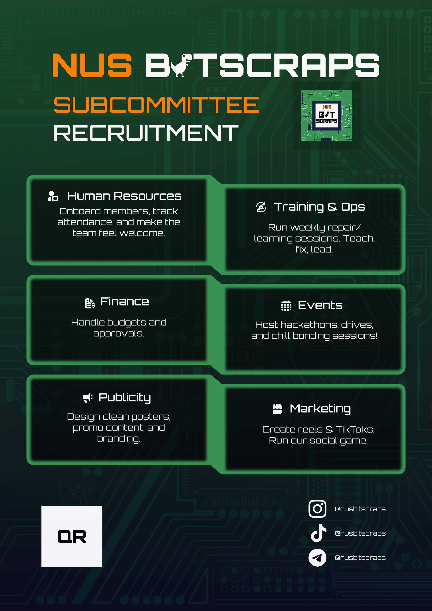
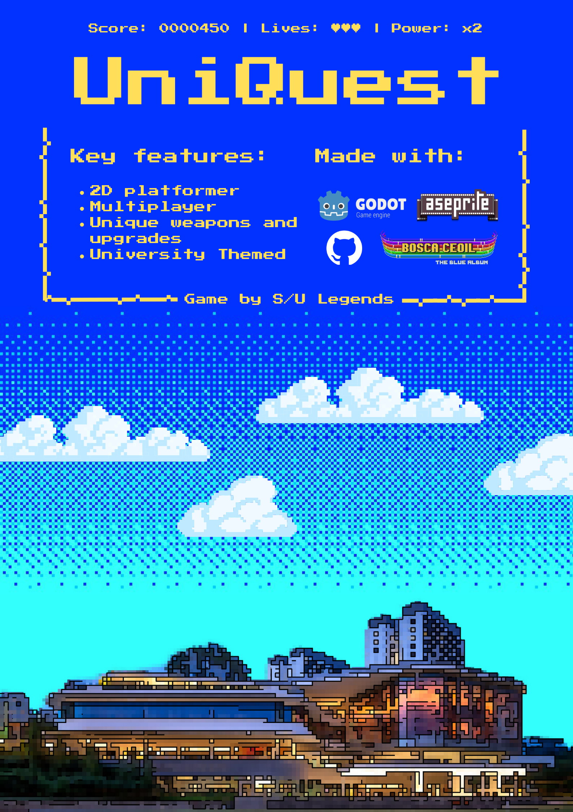
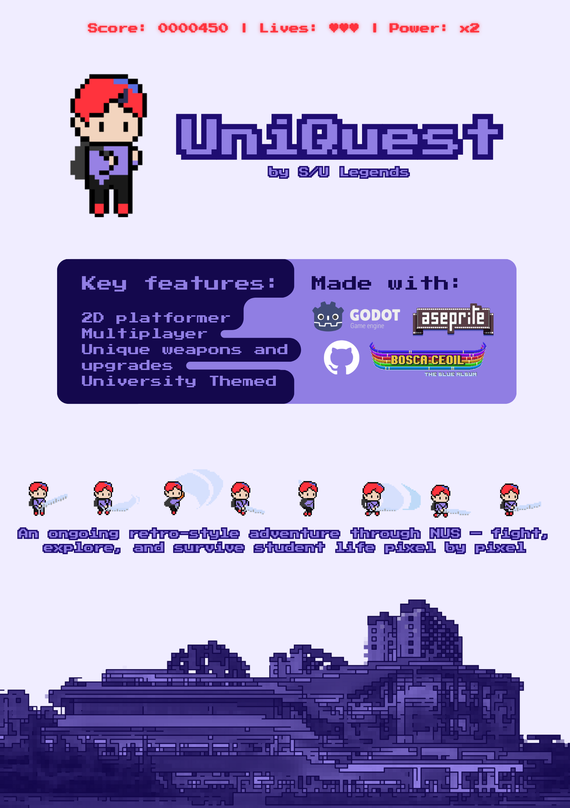
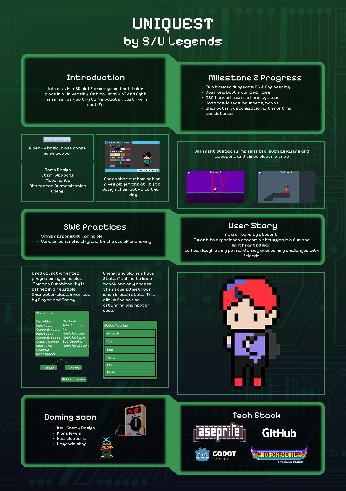

Visual work
Posters,
made for real projects.
A small selection from NUS Bitscraps publicity and UniQuest. These are the original project artifacts.

Subcommittee recruitment
Publicity and campaign design.

Proposal poster
Early project framing and visual direction.

Milestone poster
Project progress and feature overview.

Project showcase
Final system, gameplay, and software design overview.